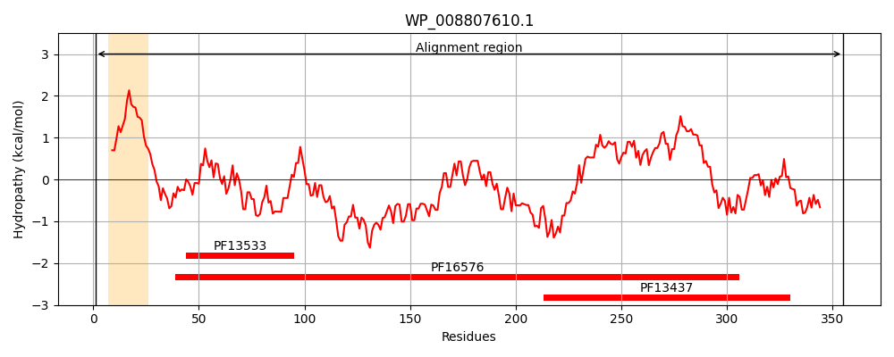
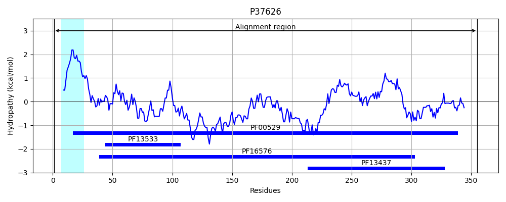
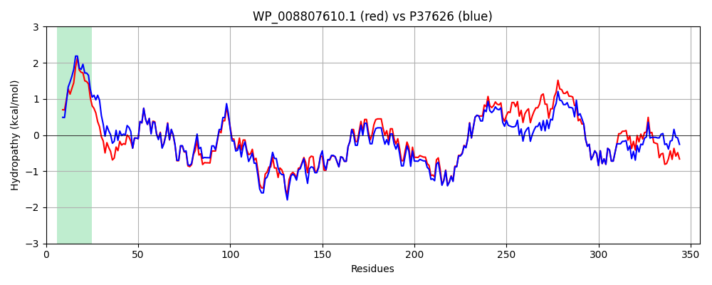

Hit Accession: P37626
Hit TCID: 3.A.1.105.16
Hit Description: gnl|BL_ORD_ID|10113 gnl|TC-DB|P37626|3.A.1.105.16 Uncharacterized protein YhiI OS=Escherichia coli (strain K12) GN=yhiI PE=3 SV=1
Mach Len: 355
e:0.000000
Query TMS Count : 1
Hit TMS Count: 1
TMS-Overlap Score: 1.000000
Predicted Substrates:None
BLAST Alignment:
Score: 1472 , Bit scores: 571 bits, E-value: 0.0e+00, Alignment length: 355, Percentage identity: 84
Query: 1 MDKIKKRWAGYLVGLLVVLAAAAWWLLRPPGLPDGFASSNGRIEATEVDIASKIAGRIDTILVKEGQFVRQGEVLARMDTRVLNEQRLEAAAQIKEAESAVLAARALLDQRQSEMRASEAVVKQRQAELDSSAKRHVRSNALSQRGAVSAQQLDDDRAAAESARAALESAKAQVSAARAAIEAARTSIIQAQTRVEAAQATERRILADIDDSELKAPRDGRIQYRVAEPGEVLAAGGRVLNMVDLADVYMTFFLPTEQAGLLALGSEARLILDAAPDLVIPANISFVASVAQFTPKTVETSDERLKLMFRVKARIPPELLAQHLEYVKTGLPGMAYVRVDKQQPWPEALTVRLPQ 355
MDK K+ A ++VGLL V A AWWLLRP G+P+GFA SNGRIEATEVDIASKIAGRIDTILVKEG+FVR+GEVLA+MDTRVL EQRLEA AQIKEA+SAV AA+ALL+QRQSE RA++++V QRQAELDS AKRH RS +L+QRGA+SAQQLDDDRAAAESARAALESAKAQVSA++AAIEAART+IIQAQTRVEAAQATERRI ADIDDSELKAPRDGR+QYRVAEPGEVLAAGGRVLNMVDL+DVYMTFFLPTEQAG L LG EARLILDAAPDL IPA ISFVASVAQFTPKTVETSDERLKLMFRVKARIPPELL QHLEYVKTGLPG+A+VRV+++ PWP+ L VRLPQ
Sbjct: 1 MDKSKRHLAWWVVGLLAVAAIVAWWLLRPAGVPEGFAVSNGRIEATEVDIASKIAGRIDTILVKEGKFVREGEVLAKMDTRVLQEQRLEAIAQIKEAQSAVAAAQALLEQRQSETRAAQSLVNQRQAELDSVAKRHTRSRSLAQRGAISAQQLDDDRAAAESARAALESAKAQVSASKAAIEAARTNIIQAQTRVEAAQATERRIAADIDDSELKAPRDGRVQYRVAEPGEVLAAGGRVLNMVDLSDVYMTFFLPTEQAGTLKLGGEARLILDAAPDLRIPATISFVASVAQFTPKTVETSDERLKLMFRVKARIPPELLQQHLEYVKTGLPGVAWVRVNEELPWPDDLVVRLPQ 355 | Protein Hydropathy Plots: |
|---|
|  |  |
Pairwise Alignment-Hydropathy Plot:
|
|---|
|  |